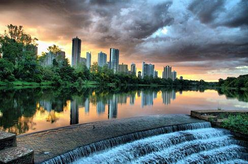

Conheça curiosidades, lugares e sabores únicos da cidade.
Pontos Turísticos
Lago Igapó, Jardim Botânico e o Museu Histórico Padre Carlos Weiss são alguns dos principais pontos turísticos.
Comidas Típicas
Londrina é famosa pelo café, pela carne suína e pelas delícias do norte do Paraná, como o pastel e o pão de queijo artesanal.
Eventos da Cidade
O Festival Internacional de Londrina (FILO) e a ExpoLondrina são os eventos mais conhecidos da cidade.
Galeria de Imagens
